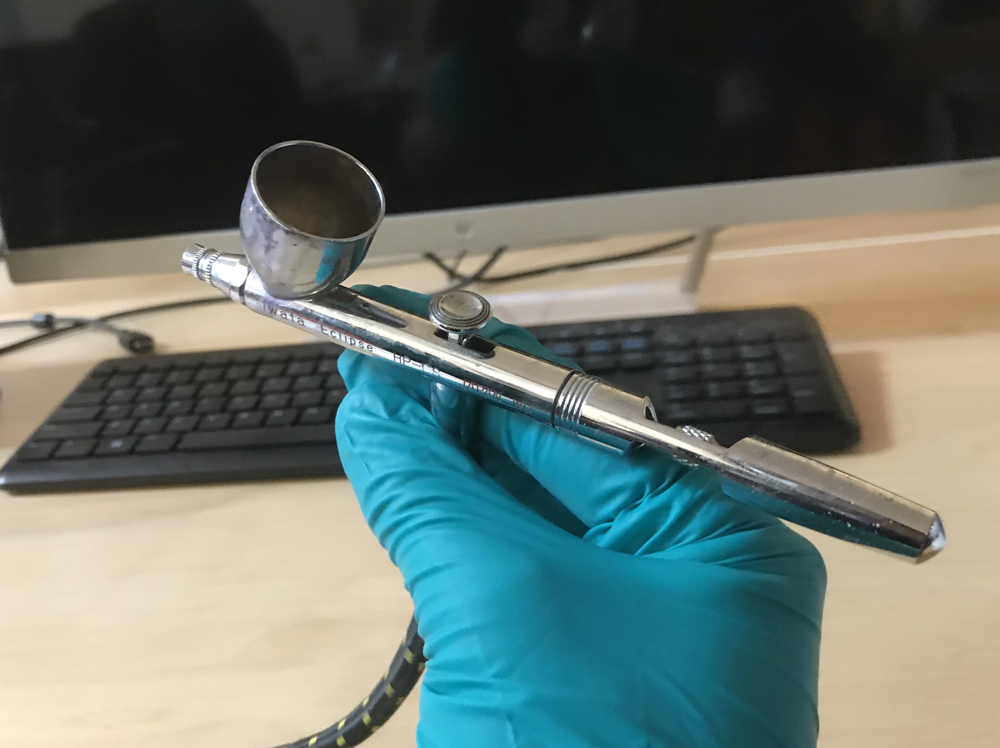

6.810 Engineering Interactive Technologies (fall 2021)
Spraying Electroluminescent Displays
In this lab, you will create the electrolumiscent display for the interactive mug from scratch using airbrushing.

Steps:
Deliverables
At the end of the lab, upload to your student google drive:
- the Arduino code (.ino) for dimming your display
- 2-3 photos (.jpg or .png) from different angles of your circuit
- a short video (.mov or .mp4, max. 1 minute) showing how you display dims and performs a full cycle from bright to dark and dark to bright again
Group Work:
Note that this lab is done in teams of 4 students. Each member of your team will spray one layer of the electrolumiscent display. Thus, all steps below should be discussed as a team and then a decision for the entire team should be made. The reason we have each team member spray one layer for everyone rather than all layers for one-self is that after spraying one material (phosphor, dieletric, copper), the airbrush has to be cleaned, which takes about 20 minutes, and the layer has to dry, which takes about 30 minutes. Thus, within the time frame we have in this class, having everyone spray all layers with all the cleaning and drying that is needed is not feasible (you would need ca. 4 hours per person to spray all layers).

(1) Decide on Display Design
Making Custom Shaped Displays: To make your display have a particular shape, consider the following: The display will only glow in those area that both have a top electrode (ITO sheet) and bottom electrode (copper). Any area that only has a top electrode (ITO) but is not covered by the bottom electrode (copper) will not glow. Thus, in order to make our display have a certain shape, we actually only need to shape either the top OR the bottom electrode, and not both. In our case, we will shape the copper electrode by vinyl cutting a stencil, applying the stencil on the already sprayed layers of the EL display and then spraying the copper electrode using this stencil. Thus, only the areas where the copper passes through the stencil will make the display glow.
Template Display Design (Coffee Cup): The template display design we provide for you if you don't want to make your own is a display shaped as a steaming coffee mug. As you can see, if contains several stencils in a row, this is because you will make 2 displays for each team member (8 in total) to ensure that a good number of them work. If you use our design, move on to step (2) to vinul cut the stencil.

Custom Display Designs: If you decide to make your own display design, please ensure the following: Can we provide a template file that has placeholder mugs?
- the individual stencil (e.g., a single coffee mug) is XXcm by YYcm
- 4 design should be placed in a row
- distance between designs need to be YYcm
- distance between rows need to be YYcm
(2) Vinyl Cut Stencil
Laser Cut the Stencil Before Coming in for Spraying
Before you come in for spraying, please make sure you have the laser cut stencil ready.
(1) Download the Stencil Design
You can find the stencil design file we prepared for you here.
As you can see, if contains several stencils in a row, this is because you make 2 displays for each team member (8 in total) to ensure that a good number of them work and you will be able to take a working display home.
(2) Check Drawing Size and other Drawing Settings
Next, open the file in your drawing program that you used for laser cutting your business card.
Check if the stencil design has the right size.
It should be 46mm x 46mm and show 8 little mugs and an outline around them.
Also don't forget to check the other laser cutter drawing settings (line color, thickness) as described here.
You may have noticed that the mugs are mirrored, i.e. the handle is on the left side not the right side.
This is necessary because when we spray the stencil, it will form the bottom layer and the display will be flipped over in the end. Thus, if you forget about this (as we did initially) you will have the handle on the wrong side.
(3) Laser Cut your Stencil (Go to a Laser Cutter Office Hour)
Go to one of the office hours this week and laser cut the stencil.
If you need to remind yourself how the laser cutter works, check this tutorial here again.
Remember that the power/speed settings for cutting a material depend on the material type, i.e. which type of material it is and how thick it is.
We will cut our stencil from an adhesive sheet.
The adhesive part will make it easy to attach the stencil to the existing three display layers.
The laser cutter settings are as follows: power: 50%, speed: 100%
z-axis should be turned 'off' and you should calibrate using the calibration stick in the laser cutter as shown by the workshop manager during the training.

Fabricating the Display:
ITO, Phosphor, Dieletric, Copper
Decide Spray Order for your Team
If you haven't already, decide which team member is going to spray what.
Enter the team member's name and spray times here in this google spreadsheet.
The ITO coated PET is just a PET sheet that we will provide you.
ITO, Phosphor, Dieletric, Copper
| Team Member 1 | Prepare Spray Base + Spray the first layer: Phosphor |
| Team Member 2&3 | Spray one pass each: Dielectric. We will do two passes on the dieletric to make sure it is really covering everything otherwise your display will short circuit |
| Team Member 4 | Laser Cut the Stencil + Spray the last layer: Copper |
Note that spraying a display is not easy and you need to take utmost care that you spray your layer according to the instructions we give.
We will call it a success if 50% of your displays work, i.e. we will have you fabricate some extra just in case.
(4) Team Member 1: Prepare ITO and Spray Phosphor Layer
We will do this together when you come in for your spray time.Before we can spray the phosphor layer onto the ITO sheet, we have to do a few preparation steps.
Cut Cardboard: Cut out a piece of cardboard larger than the ITO sheet. While spraying, you will hold onto the cardboard since you need to cover the entire ITO sheet with spray paint, so make sure the ITO sheet has enough space around it.
Remove Protective Cover from ITO Sheet: Before you tape the ITO onto the cardboard, remove its protective cover foil. The ITO sheet is sensitive to bending so try to not bend the sheet too much while you pull off the cover foil.
Identify Conductive Side on ITO sheet: The ITO sheet is only conductive on one side (i.e. the side where we just removed the protective cover foil). We want to spray onto the conductive side, so it needs to face towards you. Use a multimeter to check which side is conductive. Imagine how frustrating it would be if all your team mates come in for spraying just to find out at the end you sprayed on the wrong side of the sheet and nothing will work!
image of multimeter ITO sheet testing missing
Tape ITO sheet to Cardboard: With the conductive side facing up, attach the ITO sheet with tape to the cardboard. Tape around the entire area of the sheet, it will help you later to see where you already sprayed since you can monitor the marks on the blue area around the ITO. Try to not put too much tape on the ITO sheet itself since we need the entire ITO area for our displays.
Tape Off Connection Area: Using regular transparent tape, tape of a strip on both the middle and the bottom of your ITO sheet, i.e. at the bottom of each row of displays. We don't want any spray ink there since we will use this area to connect to our circuit later.

Spray Phosphor Layer: Load the phosphor ink into the spray gun and spray the entire area of the ITO with phosphor. Do a first pass across the entire sheet by moving you hand vertically, i.e. up and down, and then a second pass horizontally moving your hand left to right. Make sure the entire area has even coverage. If there is more phosphor in one area than another your display will have some brighter and some darker spots. Once you are done, the layer needs to dry at least 30 minutes before your team mate can come in to spray the dieletric layer.
(4) Team Member 2 + 3: Spray Dieletric Layer Pass 1 and Pass 2
Next, we will spray the dieletric layer. Remember that the dieletric layer is super important. If the dieletric layer is not covering every single pixel there will be a short circuit in this area since the ITO sheet, phosphor layer, and copper layer (last layer) are all conductive and will touch each other and thus the display will not work.Spray Dieletric Layer: Load the dieletric ink into the spray gun and spray the entire area of the ITO with dieletric ink. Team member 2 will do a first pass across the entire sheet by moving the hand vertically, i.e. up and down. Team member 3 will then do a second pass horizontally moving the hand left to right. For both passes, you want to make sure the entire area has even coverage. If there is more dieletric in one area than another your display will have some brighter and some darker spots since there is more resistance in some areas than in others. Once the dieletric layer is done, it needs to dry at least 30 minutes before your team mate can come in to spray the copper layer.
Team Member 4: Laser Cut Stencil and Spray Copper Layer
Spraying the Copper Layer:Before we can spray the copper layer, you need to apply the stencil (we will do this together when you come in for spraying).
First peel the protective layer from the back side of the foil.
The foil is adhesive on one side.
Stick the stencil on top of the display sample.
Make sure the stencil area with the display is not touching the transparent tape team member 1 taped onto the ITO sheet.
Also make sure that your stencil covers the entire ITO sheet and there are no areas not covered by the stencil.
When you apply the stencil, don't apply to much pressure so you don't damage the underlying layers.
Next, spray the copper layer.
Once the copper layer is sprayed, we let it dry a bit.
Next, we want to remove the stencil and take the displays off the cardboard backing.
Start by removing the stencil.
Next, peel off both the stripes of transparent tape.
Next, peel off the blue tape around the ITO sheet and take the display strip of the cardboard.

Next, let's test how conductive the copper layer is from these two displays.
This gives a good first estimate if the display will work or not.
As in lab 1, use a multimeter and check if the layer is conductive.
The tips of the multimeter are quite pointy and you can damage the layers if you press too harshly on the copper, so be gentle.
A good resistance would be around 10Ω.
Anything higher than 50Ω that will likely not work.

Now that we have the displays, we want to power them up.
As you can see below, to power them up we need to connect two wires, one to the ITO layer and one to the copper layer, i..e one for GND and one for power.

To connect to the ITO layer, we attach copper tape to the ITO sheet and we can later use a crocodile clamp to connect to it.


Before we connect to the copper layer, let's cut the displays into individual displays first.


Now we can connect to the copper layer.
For this, we attach a small copper tape flap, which we can again later use with a crocodile clamp.
Make the copper flap cover a larger area of the coffee mug display to ensure a good connection.
Once we tested all your displays, you can either put them into your team storage at the IDC for everyone to pick up by themselves or bring them to your team mates.
(1) Safety Instructions
For spraying, we will have a compressor that creates air pressure and a spraygun, which is connected to the compressor, ready for you. Read the safety instructions:
safety wear and spraying

(2) Preparing Inks
Read this short tutorial on how to prepare the spray inks.
preparing the spray inks
(3) Cleaning Airbrush
Read how to clean the airbrush. cleaning the airbrush
Deliverables Lab 5 (due Friday, Sept. 25, 2020, 11.59pm)
At the end of Lab 5, upload to your student google drive:- some photos of how your team fabricated their displays